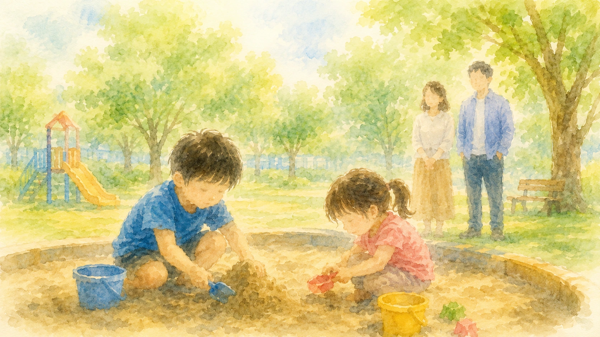

この記事は、障害のある子、発達特性のある子、医療的ケアのある子がいる家庭で、きょうだいの負担を見直すためのコラムです。保護者を責めるためではなく、家族全体に支援を届けるための整理として書いています。
障害のある子、発達特性のある子、医療的ケアのある子を育てる家庭では、どうしても支援や対応が必要な子に時間と注意が集まりやすくなります。通院、学校との連絡、療育、福祉サービスの調整、日々の声かけや安全確認。保護者は、毎日たくさんの判断をしています。
その一方で、もう一人のきょうだいが「いい子」でいようとしすぎたり、親を困らせないように本音をしまい込んだりしていることがあります。大人から見ると、しっかりしている。手がかからない。よくわかってくれている。そう見える子ほど、心の中で「自分は後でいい」と思い続けている場合があります。
ただ、ここで保護者が自分を責める必要はありません。きょうだいに目が届きにくくなるのは、愛情が足りないからではなく、家庭にかかっている負荷が大きいからです。大切なのは、「見落としていたかもしれない」と気づいたところから、少しずつ関わり方を調整することです。
この記事では、きょうだいを「助かる存在」として見すぎず、一人の子どもとして支えるために、家庭で見たいサイン、声かけ、手伝いとケア負担の線引き、学校や福祉への相談の仕方を整理します。
1. きょうだいを「小さな支援者」にしすぎない
障害のある子や、日常的に強い支援を必要とする子が家庭にいると、もう一人のきょうだいが自然に手伝ってくれることがあります。靴を持ってきてくれる。声をかけてくれる。遊び相手になってくれる。親が疲れているときに空気を読んで静かにしてくれる。保護者にとって、それは本当に助かる姿です。
しかし、その姿だけを見て「この子は大丈夫」と思いすぎると、きょうだい本人の負担が見えにくくなります。きょうだいは、支援者ではありません。家族の一員ではありますが、同時に、守られるべき一人の子どもです。
「助かる」「しっかりしている」「お兄ちゃんだから」「お姉ちゃんだから」という言葉が重なると、きょうだいは本音を言いにくくなります。本当は甘えたいのに、親を困らせないように我慢する。本当は嫌だったのに、「そんなことを言ってはいけない」と飲み込む。その積み重ねが、見えにくい孤独につながることがあります。
手伝ってくれたことに感謝することは大切です。ただし、その感謝と同じくらい、「あなたが全部背負わなくていい」「あなたも子どもでいていい」と伝えることも大切です。
2. 我慢しすぎているときに見えるサイン
きょうだいが我慢しているとき、必ずしも「つらい」と言葉にするわけではありません。むしろ、よくできる子、手がかからない子として見えていることがあります。
我慢しすぎているかもしれないサイン
- 親に頼みごとをしなくなる
- 「自分はいいよ」と言うことが増える
- 本当は嫌なのに、すぐ譲る
- 急に怒る、泣く、物に当たる
- 学校や友達の話をしなくなる
- 体調不良を訴えることが増える
- 障害のあるきょうだいに強く当たる
- 親の顔色を過度に見る
- 家の外では明るいが、家では無気力になる
- 「どうせ自分は後でいい」と言う
これらは、きょうだいの性格が悪くなったという意味ではありません。我慢、寂しさ、怒り、不安、罪悪感が、言葉以外の形で出ている可能性があります。
とくに大切なのは、障害のある子に対する否定的な言葉が出たときです。「嫌い」「ずるい」「いなければいいのに」といった言葉に、保護者は強く動揺します。
もちろん、相手を傷つける言葉や行動は止める必要があります。ただ、その言葉を「ひどい子」として片づける前に、「自分も見てほしい」「自分だけ我慢している気がする」「親に怒られずに本音を言いたい」というサインが隠れていないかを見たいところです。
3. きょうだいが担いやすい見えにくい役割
きょうだいの負担は、家事や介助のように見えるものだけではありません。むしろ、家庭内では見えにくい役割を担っていることがあります。
| 担いやすい役割 | 見えにくい負担 | 大人ができる調整 |
|---|---|---|
| 空気を読む役割 | 親が疲れているときに、自分の希望を言わない | 「あなたの希望も聞きたい」と大人から確認する |
| 我慢する役割 | 予定変更や外出中止を受け入れ続ける | 代替日を決める。埋め合わせを言葉だけで終わらせない |
| 通訳する役割 | きょうだいの気持ちや行動を周囲に説明する | 説明は大人が担う。子どもに責任を背負わせない |
| 見守る役割 | 外出先や家庭内で、危険がないか気を張る | 見守りを当然にせず、大人の役割として戻す |
| 聞き役になる役割 | 親の不安や愚痴を受け止め続ける | 親の相談先を別に作る。子どもを親の支え役にしすぎない |
| 将来を背負う役割 | 「将来は自分が面倒を見るのか」と不安になる | 将来の責任を子どもに約束させない。福祉制度や大人の計画として整理する |
家族だから手伝ってはいけない、ということではありません。ただし、手伝いが続きすぎたり、責任が重くなりすぎたりすると、子どもの時間、学び、友達関係、休息が削られていきます。
4. 言ってよい気持ちを増やす
きょうだい支援で大切なのは、正しい気持ちを持たせることではありません。どんな気持ちも一度は言ってよい、と伝えることです。
きょうだいは、障害のある兄弟姉妹に対して、好き、かわいい、心配、守りたいという気持ちを持つことがあります。同時に、嫌だ、ずるい、うるさい、恥ずかしい、疲れた、離れたいという気持ちを持つこともあります。その両方があってよいのです。
受け止める言い方
「そんなこと言わないの」ではなく、
「そう思うくらい、つらかったんだね」
「嫌だと思うことがあってもいいよ」
「その気持ちを言ってくれてよかった」
「どうしたら少し楽になるか、一緒に考えよう」
ただし、気持ちを受け止めることと、相手を傷つける行動を許すことは別です。「嫌だと思ってもいい。でも、叩くことや傷つける言葉は止めよう」というように、気持ちと行動を分けて伝えます。
きょうだいに必要なのは、きれいな言葉だけを言える家庭ではありません。複雑な気持ちを出しても、関係が壊れない家庭です。
5. きょうだいだけの時間を作る
きょうだいにとって大切なのは、長時間の特別なイベントだけではありません。「自分だけを見てもらえた」と感じる短い時間です。
家庭の状況によっては、親子で一日出かけることが難しい場合もあります。保護者が疲れ切っていて、時間を作ること自体が重く感じる日もあります。だからこそ、できる範囲を小さくしてよいと思います。
きょうだいだけの時間の例
- 寝る前に5分だけ、きょうだい本人の話を聞く
- 買い物の帰りに、二人だけで飲み物を買う
- 学校の作品やテストを、障害のある子の対応の前に見る日を作る
- 月に一度、短時間でも本人の行きたい場所を選ぶ
- 通院や相談の予定が続く時期は、きょうだいの予定もカレンダーに入れる
- 「今日はあなたの話を聞く時間」と言葉にして伝える
ここで重要なのは、時間の長さよりも、主役が誰かを明確にすることです。「ついで」ではなく、「あなたのための時間」と伝えることで、きょうだいは自分も大切にされていると感じやすくなります。
もし予定が流れてしまったときは、「ごめんね、また今度」だけで終わらせず、「土曜の午前に10分だけ行こう」など、次の小さな約束に置き換えます。約束を大きくしすぎないことが、続けるための工夫になります。
6. 障害や特性をどう説明するか
きょうだいには、障害や特性について何も説明しないほうがよい、というわけではありません。むしろ、説明がないままだと、きょうだいは自分なりに理由を作ってしまうことがあります。
「自分が悪いから親が忙しいのかな」「あの子だけ許されるのは、親があの子のほうを好きだからかな」「将来は自分が全部見なければいけないのかな」。こうした誤解を減らすためにも、年齢に応じた説明が必要です。
説明の例
「○○には、音や予定変更がとてもつらく感じる特性があるよ。
だから大人が手伝うことがある。
でも、それはあなたが我慢しなくていいという意味ではないよ。
あなたの困ったことも、大人が一緒に考えるよ。」
説明するときは、障害のある子を「かわいそうな子」として伝えすぎないことも大切です。きょうだいに必要なのは、同情を求められることではなく、家庭の中で何が起きているのかを理解できる言葉です。
そして、将来の話をするときは注意が必要です。「将来はあなたが見てね」と子どものうちから言われると、きょうだいは人生全体を背負わされたように感じることがあります。将来の支援は、子どもに約束させるものではなく、大人が制度や地域資源を使って考えるものです。
7. 手伝いとケア負担の線引き
家族の中で手伝いをすること自体は、悪いことではありません。しかし、年齢や発達段階に比べて重すぎる世話を日常的に担っている場合は、きょうだい本人の生活が削られていないかを見直す必要があります。
| 自然な手伝いの範囲 | 負担が大きくなっているサイン |
|---|---|
| 短時間だけ遊び相手になる | 長時間、見守りを任されて自分の遊びや宿題ができない |
| 簡単な持ち物を取ってくる | 毎日の介助や安全確認を当然のように任される |
| 家族の予定を一緒に確認する | 親の代わりに説明や謝罪をする役割を担う |
| 困ったときに大人を呼ぶ | パニックや危険な場面で、きょうだいが一人で対応している |
| たまに家事を手伝う | 家事や世話のために、睡眠、学習、友達との時間が削られている |
「手伝ってくれてありがとう」と伝えることは大切です。ただし、その後に、「これは本当は大人が考えることだよ」「あなたが全部背負わなくていいよ」と役割を戻す言葉も必要です。
ヤングケアラーという視点
家族の世話を日常的に担い、その負担が子ども自身の生活や学び、友人関係、休息に影響している場合、ヤングケアラーの視点から支援を考える必要があります。これは、家庭を責めるための言葉ではありません。本来は大人や社会が分担すべき負担を、子どもだけに寄せないための視点です。
8. 学校・福祉・親族に相談するとき
きょうだいの負担が大きくなっていると感じたとき、家庭だけで何とかしようとすると、保護者もきょうだいも苦しくなります。学校、福祉、親族、相談機関に、少しずつ役割を分けることが大切です。
学校に相談するとき
「家庭の中で、きょうだいが我慢している様子があります。学校での表情や友達関係、疲れのサインがないか見ていただけますか。必要であれば、スクールカウンセラーにもつなげたいです。」
福祉事業所に相談するとき
「本人支援だけでなく、きょうだいへの影響も気になっています。家庭での過ごし方や、きょうだいが休める時間の作り方について相談できますか。」
親族に頼むとき
「障害のある子の対応を手伝ってほしい日もありますが、もう一人の子だけを連れ出す時間も作りたいです。その子が主役になれる時間をお願いできると助かります。」
支援を頼むとき、障害のある子の対応だけを依頼しがちです。しかし、きょうだいの時間を確保するための支援も、家族支援の一部です。
9. 家庭で整理しておきたいメモ
きょうだいの我慢は、見えにくいからこそ、意識して記録することが役に立ちます。次のようなメモを作ると、家庭内の調整や学校・福祉への相談が具体的になります。
このメモの目的は、保護者を責めることではありません。家庭の中で見えにくくなっている負担を見えるようにし、きょうだい本人にも支援を届けるためのものです。
10. きょうだいに伝えたい言葉
きょうだいに必要なのは、「我慢してくれてありがとう」だけではありません。その言葉は大切ですが、それだけだと、さらに我慢を強めてしまうことがあります。
| よく言いがちな言葉 | 足したい言葉 |
|---|---|
| 「いつも助かるよ」 | 「でも、あなたが全部助けなくていいよ」 |
| 「お兄ちゃんだから／お姉ちゃんだから」 | 「あなたも甘えていいよ」 |
| 「わかってくれてありがとう」 | 「わからないことや嫌なことがあったら言っていいよ」 |
| 「ごめんね、後でね」 | 「いつにするか、今決めよう」 |
| 「将来もよろしくね」 | 「将来のことは大人が考えるよ。あなたの人生も大事だよ」 |
きょうだいは、家族の一員です。けれども、家族を支えるためだけにいるのではありません。その子自身の生活、友達、学び、夢、休息が守られる必要があります。
まとめ：きょうだいも「支える側」ではなく、支えられる子ども
障害のある子の家庭では、どうしても支援が必要な子に注意が集まりやすくなります。それは、保護者の愛情が偏っているからではありません。家庭にかかる負荷が大きいからです。
しかし、その中で、もう一人のきょうだいが静かに我慢していることがあります。「自分は後でいい」「親を困らせてはいけない」「嫌だと思ってはいけない」。そう思いながら、子どもらしい時間を手放している場合があります。
きょうだいを「しっかりした子」「助かる子」として見るだけでなく、一人の子どもとして見ること。本音を言ってよい時間を作ること。手伝いと負担の線引きをすること。学校、福祉、親族にも役割を分けること。その積み重ねが、家族全体を支える土台になります。
障害のある子を大切にすることと、きょうだいを大切にすることは、対立しません。どちらか一人を選ぶのではなく、どちらも一人の子どもとして見失わない。その視点が、家庭の安心を少しずつ作っていきます。
きょうだいの我慢、家庭全体の疲れ、学校や福祉への伝え方を一人で抱え込まないために。まなびの森教育研究所では、保護者の方の困り感を整理し、次に相談したいことを一緒に言葉にしていきます。
保護者向け相談ページを見る